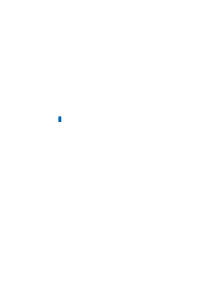

using the Azure OpenAI Service in your specific context(s). In this section, we provide
recommendations and resources you can use to identify harms through an impact
assessment, iterative red team testing, stress-testing, and analysis. Red teaming and
stress-testing are approaches where a group of testers come together and intentionally
probe a system to identify its limitations, risk surface, and vulnerabilities.
These steps have the goal of producing a prioritized list of potential harms for each
specific scenario.
1. Identify harms that are relevant for your specific model, application, and
deployment scenario.
a. Identify potential harms associated with the model and model capabilities (for
example, GPT-3 model vs GPT-4 model) that you're using in your system. This is
important to consider because each model has different capabilities, limitations,
and risks, as described more fully in the sections above.
b. Identify any other harms or increased scope of harm presented by the intended
use of the system you're developing. Consider using a Responsible AI Impact
Assessment to identify potential harms.
i. For example, let's consider an AI system that summarizes text. Some uses of
text generation are lower risk than others. For example, if the system is to be
used in a healthcare domain for summarizing doctor's notes, the risk of harm
arising from inaccuracies is higher than if the system is summarizing online
articles.
2. Prioritize harms based on elements of risk such as frequency and severity. Assess
the level of risk for each harm and the likelihood of each risk occurring in order to
prioritize the list of harms you've identified. Consider working with subject matter
experts and risk managers within your organization and with relevant external
stakeholders when appropriate.
3. Conduct red team testing and stress testing starting with the highest priority
harms, to develop a better understanding of whether and how the identified harms
are actually occurring in your scenario, as well as to identify new harms you didn't
initially anticipate.
4. Share this information with relevant stakeholders using your organization's
internal compliance processes.
At the end of this Identify stage, you should have a documented, prioritized list of
harms. When new harms and new instances of harms emerge through further testing
and use of the system, you can update and improve this list by following the above
process again.
Measure